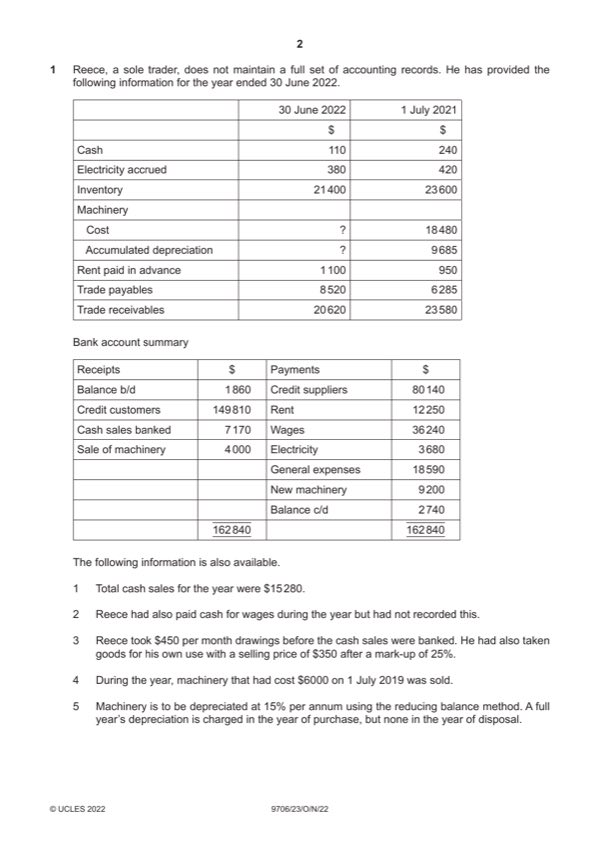

Question 1

Original paper page 2
Part 1(a) — solution
- $149 810 + +(20 620 – 23 580) (1) = $146 850 (1) OF
Mark points
- $149 810 + +(20 620 – 23 580) (1) = $146 850 (1) OF
Part 1(b) — solution
- $80 140 + $8 520 – $6 285 = $82 375 (1) 1
Mark points
- $80 140 + $8 520 – $6 285 = $82 375 (1) 1
Part 1(c) — solution
- ($240 + $15 280) (1) – ($5 400 – $7170 – $110) (1) = $2840 (1) OF
Mark points
- ($240 + $15 280) (1) – ($5 400 – $7170 – $110) (1) = $2840 (1) OF
Part 1(d) — solution
- Cost: $18 480 + 9200 – $6000 = $21 680 (1)
- Acc Dep’n: $9685 – $1665 = $8 020 (1)
Mark points
- Cost: $18 480 + 9200 – $6000 = $21 680 (1)
- Acc Dep’n: $9685 – $1665 = $8 020 (1)
Part 1(e) — solution
Answer: 105 695
Reece 10
Income statement for the year ended 30 June 2022
$ $
Revenue 162 130 (1) OF
Cost of sales
Opening inventory 23 600
Purchases 82 375 (1) OF
Goods taken for own use (280) (1)
105 695
Closing inventory (20 825) (1) 84 870
Gross profit 77 260 (1) OF
Wages 39 080 (1) OF
Rent 12 100 (1)
Electricity 3 640 (1)
General expenses 18 590
Depreciation 2 049
Loss on disposal 335 (1)
Mark points
- Correct result: 105 695
Part 1(f) — solution
Wear and tear (1). 2
Obsolescence (1).
Technological change (1).
Usage (1).
Max 2 marks
Accept other valid responses.
Mark points
- Include the ideas shown in the solution above.
Part 1(g)(i) — solution
Matching concept (1) 2
To match the costs of usage of the non-current asset with the revenue earned in the same year(1)
2022 Page 8 of 17
9706/23 Cambridge International AS & A Level – Mark Scheme October/November 2022
Mark points
- Include the ideas shown in the solution above.
Part 1(g)(ii) — solution
Prudence concept (1) 2
To ensure that inventory / current assets / profit are not overstated (1)
Mark points
- Include the ideas shown in the solution above.
Part 1(h) — solution
Would enable Reece to monitor and control all income and expenditure (1) which in turn should avoid the occurrence of 5
irrecoverable debts (1). However. Reece may not have the necessary skills/time to maintain a full set of accounting records
(1) and this may involve additional expenditure and reduced profitability in having to employ skilled services (1)
Advice (1)
Accept other valid responses.
2022 Page 9 of 17
9706/23 Cambridge International AS & A Level – Mark Scheme October/November 2022
Mark points
- Include the ideas shown in the solution above.